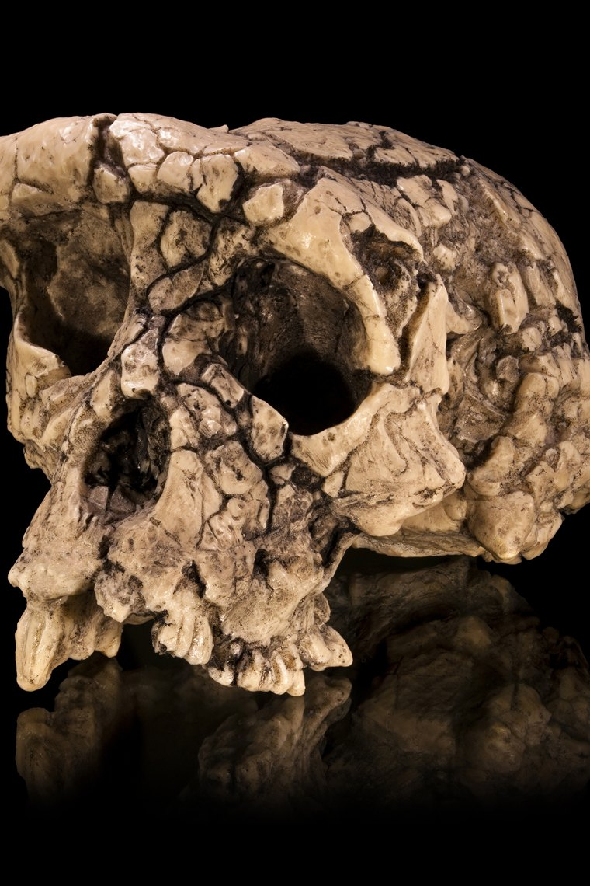

Cranium TM 266-01-060-1 (“Toumaï”), the Sahelanthropus tchadensis type specimen
Photo/artwork by Didier Descouens, via Wikimedia Commons, licensed under CC BY-SA 4.0. Cropped and resized for this site.
Sahelanthropus tchadensis
At the very root of the family tree, an ape that may have already stood up.
Overview
Sahelanthropus tchadensis is the oldest creature widely proposed to sit on the human side of the family tree, living around 7 million years ago — close to the genetic estimate for when our lineage split from chimpanzees. It is known mainly from a single remarkable cranium nicknamed Toumaï, plus jaw fragments and teeth, all from Chad.
Its discovery in central Africa was a shock: almost all other early hominins come from eastern and southern Africa, so Toumaï pushed the geographic and temporal frontier of human origins far back and far west.
Anatomy & Body
The skull blends ape-like and hominin-like traits — a small, chimp-sized braincase paired with a surprisingly flat face and smaller, less projecting canine teeth than living apes.
The position of the foramen magnum (the hole where the spinal cord exits the skull) sits relatively far forward, which many researchers read as evidence that Toumaï held its head atop an upright spine — a hint of bipedalism. A contested thigh-bone analysis has been used both to support and to question this.
Brain & Cognition
With a braincase of roughly 320–380 cc, Toumaï's brain was in the range of a modern chimpanzee. There is no evidence of advanced cognition; its importance is anatomical and phylogenetic, not behavioural.
Behavior & Culture
No tools or cultural remains are associated with Sahelanthropus. It lived in a mosaic of forest, woodland and lake-margin habitats, judging from the fossil animals found alongside it — a setting that complicates the old idea that upright walking evolved purely as a response to open savanna.
Key Fossils
- TM 266-01-060-1 (“Toumaï”) — a nearly complete but distorted cranium, the type specimen.
- Several lower-jaw pieces and isolated teeth from the same Toros-Menalla region of Chad.
Relationship to Us
Sahelanthropus may be a direct ancestor, an early hominin side-branch, or even a fossil ape close to the common ancestor — the single distorted skull leaves room for debate. Either way it marks roughly where our story begins.
Discovery & history
The skull was spotted on 19 July 2001 by Ahounta Djimdoumalbaye, a Chadian undergraduate working with Michel Brunet's Mission Paléoanthropologique Franco-Tchadienne, lying on the surface of a wind-scoured dune field at Toros-Menalla in the Djurab Desert. Nothing about the location fitted expectations: it sits roughly 2,500 km west of the Rift Valley sites that had produced almost every early hominin known at the time.
Brunet's team described the specimen in Nature in July 2002. Chad's then-president Idriss Déby supplied the nickname Toumaï, a Dazaga word given to children born just before the dry season and usually translated as "hope of life".
The cranium had been badly crushed and distorted during fossilisation, and much of the early argument about it was really an argument about the reconstruction. A digital restoration published in 2005, built from CT scans, straightened the deformation and became the basis for most subsequent interpretation.
One important limitation: there is no volcanic ash at Toros-Menalla, so the ~7-million-year age does not come from radiometric dating. It is a biochronological estimate, derived by comparing the associated fossil animals with dated faunas elsewhere in Africa.
Debates & open questions
Sahelanthropus is the most contested entry on this entire site, and the dispute is fundamental: some researchers do not accept it as a hominin at all.
The case for hominin status rests mainly on the skull. The foramen magnum sits relatively far forward and faces downward, which is what you expect if the head balanced atop a vertical spine. The canine teeth are small and worn flat at the tip rather than honed against the lower premolar, a distinctly non-ape pattern.
The case against came quickly. Brigitte Senut and Martin Pickford — who had described the rival early hominin Orrorin tugenensis a year earlier — argued that Toumaï was better read as an ape, possibly close to gorilla ancestry, and that the flat face was a female ape trait rather than a hominin one.
A thigh bone collected at the same time became its own controversy. It went undescribed for nearly two decades before Daver and colleagues published it in Nature in 2022, arguing that its shaft geometry indicates habitual bipedalism. A separate group led by Roberto Macchiarelli, who had examined the same bone earlier, countered that the features are equally consistent with a quadrupedal ape. That disagreement is unresolved.
Until more of the skeleton is recovered, whether our lineage begins with Toumaï or somewhere else remains genuinely open.